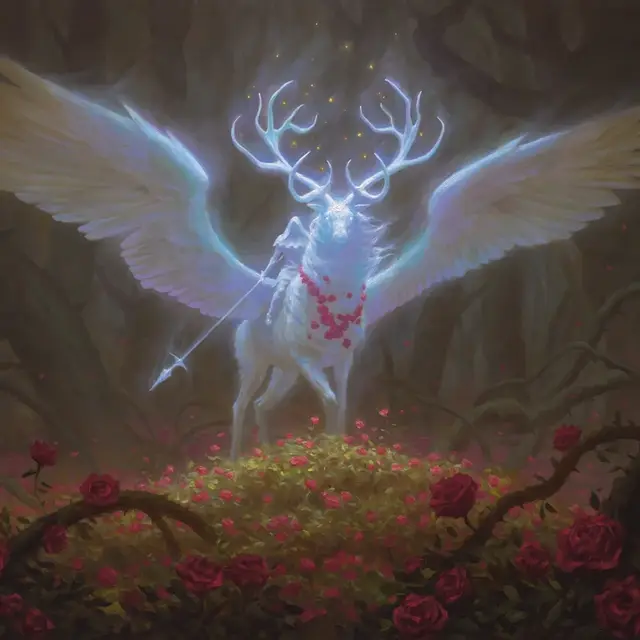

Архонт границ
Archon of Boundaries
Огромный Небожитель, законно-добрый

Класс Доспеха 17 (природный доспех)
Хиты 195 (17к12 + 85)
Скорость 60 футов, летая 90 футов
| мод | спас | ||
|---|---|---|---|
| СИЛ | 23 | +6 | +6 |
| ЛОВ | 17 | +3 | +3 |
| ТЕЛ | 20 | +5 | +10 |
| мод | спас | ||
|---|---|---|---|
| ИНТ | 14 | +2 | +2 |
| МДР | 18 | +4 | +9 |
| ХАР | 18 | +4 | +4 |
Навыки Восприятие +9, Проницательность +9
Сопротивление урону излучение
Иммунитет к состояниям истощение
Чувства тёмное зрение 120 футов, пассивное Восприятие 19
Языки понимает Небесный и Общий, но не может говорить
Опасность 15 (13000 опыта)
Бонус мастерства +5
Особенности
Легендарное сопротивление (3/день). Если архонт проваливает спасбросок, вместо этого он может выбрать успех.
Сопротивление магии. Архонт совершает с преимуществом спасброски от заклинаний и других магических эффектов.
Действия
Мультиатака. Архонт совершает одну атаку Копытами и одну атаку Сияющим Копьем.
Копыта. . Рукопашная атака оружием: +11 к попаданию, досягаемость 5 фт., одна цель. Попадание: 20 (4к6 + 6) дробящего урона плюс 10 (3к6) урона излучением. Если цель — существо Среднего размера или меньше, она должна преуспеть в спасброске Силы Сл 19, иначе она будет сбита с ног.
Сияющее копье. . Рукопашная атака оружием: +11 к попаданию, досягаемость 10 фт., одна цель. Попадание: 12 (1к12 + 6) колющего урона плюс 28 (8к6) урона излучением, и цель становится отмеченной до начала следующего хода архонта. Пока цель отмечена, она с помехой совершает броски атаки против других существ, кроме архонта.
Использование заклинаний. Архонт накладывает одно следующих заклинаний, используя Харизму в качестве базовой характеристики:
• 1/день каждое: дневной свет [daylight], малое восстановление [lesser restoration]
Реакции
Архонт может совершить до трёх реакций за раунд, но только одну за ход.
Погоня Архонта. Когда существо, отмеченное Сияющим Копьем архонта, заканчивает свой ход в пределах 120 футов от архонта, архонт телепортируется в незанятое пространство, которое он видит, находящееся в пределах 5 футов от существа.
Призрачное сияние. Сразу после того, как существо в пределах 120 футов от архонта заставляет его совершить спасбросок, архонт отвечает вспышкой света. Существо должно преуспеть в спасброске Телосложения Сл 17, иначе станет ослеплённым до конца своего следующего хода.
Парирование. Архонт добавляет +5 к своему КД против одной рукопашной атаки, при условии, что он может видеть атакующего.
Описание
«Крылатая заря рассеивает ужас ночи».
— Чулане, Рассказчик
Архонты Элдраина — загадочные существа, летающие по периметру, где царство встречается с дикой природой, отмечая границу между безопасностью (для жителей королевства) и опасностью. Вид архонта над головой — явный сигнал о том, что вы входите в дебри лесов.
Архонт выглядит как призрачный всадник в капюшоне, восседающий на крылатом лосе со светящимися рогами и блестящими глазами. Несмотря на данный внешний вид, всадник и его скакун — единое существо, которое невозможно разделить. В легендах говорится, что архонты — это вознесенные духи паладинов, объединённые с небесными духами своих скакунов, вернувшиеся из небесных царств, чтобы охранять границу дикой местности и защищать тех, кто осмелится ее пересечь.
Иногда рыцарям королевства приходит в голову мысль, что они могут расширить границы своей земли и держать дикую местность на расстоянии, просто загоняя архонтов глубже в дебри. Такие усилия тщетны; Архонтов не только трудно убить, но так же они не создают границ, а лишь отмечают их.